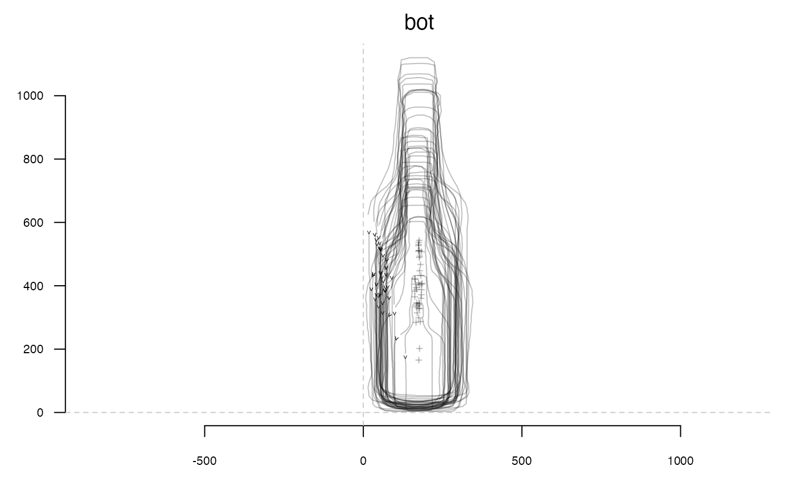
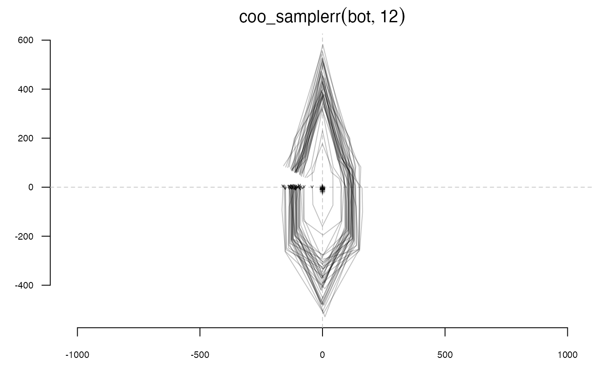
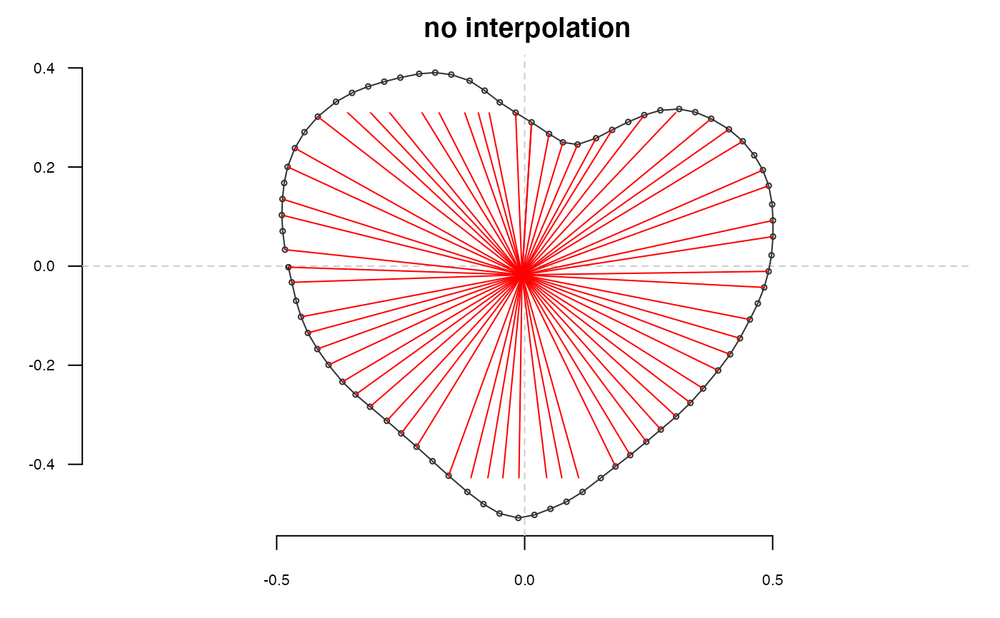
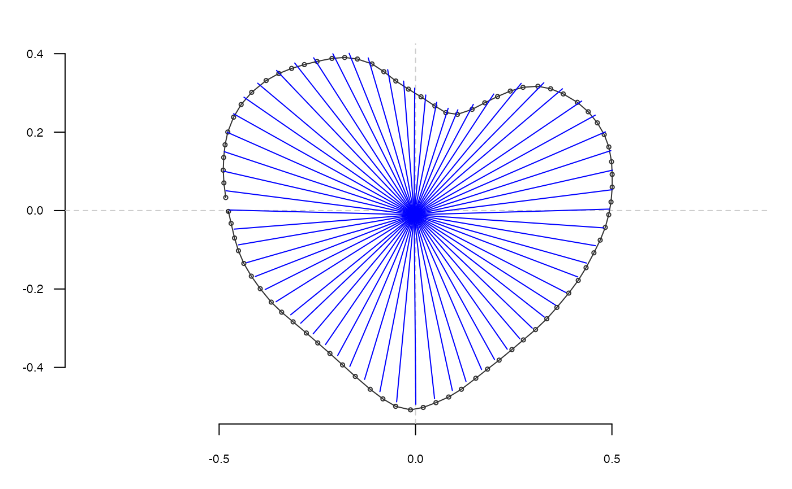

Samples n coordinates with a regular angle.
coo_samplerr(coo, n)
Arguments
| coo |
|
|---|---|
| n |
|
Value
a matrix of (x; y) coordinates or a Coo object.
Details
By design, this function samples among existing points, so using coo_interpolate prior to it may be useful to have more homogeneous angles. See examples.
See also
Other sampling functions:
coo_extract(),
coo_interpolate(),
coo_sample_prop(),
coo_sample()
Other coo_ utilities:
coo_aligncalliper(),
coo_alignminradius(),
coo_alignxax(),
coo_align(),
coo_baseline(),
coo_bookstein(),
coo_boundingbox(),
coo_calliper(),
coo_centdist(),
coo_center(),
coo_centpos(),
coo_close(),
coo_down(),
coo_dxy(),
coo_extract(),
coo_flipx(),
coo_force2close(),
coo_interpolate(),
coo_is_closed(),
coo_jitter(),
coo_left(),
coo_likely_clockwise(),
coo_nb(),
coo_perim(),
coo_range(),
coo_rev(),
coo_right(),
coo_rotatecenter(),
coo_rotate(),
coo_sample_prop(),
coo_sample(),
coo_scale(),
coo_shearx(),
coo_slice(),
coo_slidedirection(),
coo_slidegap(),
coo_slide(),
coo_smoothcurve(),
coo_smooth(),
coo_template(),
coo_trans(),
coo_trimbottom(),
coo_trimtop(),
coo_trim(),
coo_untiltx(),
coo_up(),
is_equallyspacedradii()
Examples
stack(bot)#>#># Sometimes, interpolating may be useful: shp <- hearts[1] %>% coo_center # given a shp, draw segments from each points on it, to its centroid draw_rads <- function(shp, ...){ segments(shp[, 1], shp[, 2], coo_centpos(shp)[1], coo_centpos(shp)[2], ...) } # calculate the sd of argument difference in successive points, # in other words a proxy for the homogeneity of angles sd_theta_diff <- function(shp) shp %>% complex(real=.[, 1], imaginary=.[, 2]) %>% Arg %>% `[`(-1) %>% diff %>% sd # no interpolation: all points are sampled from existing points but the # angles are not equal shp %>% coo_plot(points=TRUE, main="no interpolation")shp %>% coo_samplerr(64) %T>% draw_rads(col="red") %>% sd_theta_diff#> [1] 0.03301767#> [1] 0.00696334